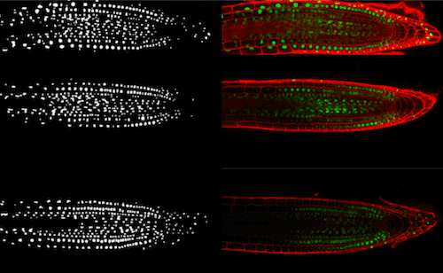
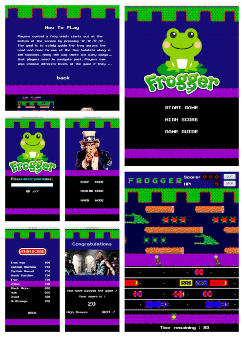

Interactive Audio Adventure
The Software Engineering Group Project is about developing a story-based interactive audio game for people with vision loss. With the collaboration with our industry sponsor IBM, our game is powered by IBM Watson Assistant (WA), Text-to-Speech (T2S) and Speech-To-Text (S2T), making the game experience engaging and joyful.
Java is our optimal choice to apply MVC design pattern, making the project maintainable and extendable.
Face Matching
In this project, traditional approaches and a deep learning approach for face matching are evaluated based on a public facial dataset.
The main steps to match the facial images consist of: 1) Facial Localisation 2) Facial Feature Extraction 3) Facial Classification. The implementations are based on MATLAB and Python.
Cell Nuclei Identification
This project is about identify the cell nuclei from a set of confocal microscope images implemented based on MATLAB.
A GUI is designed to allow user interaction and make comparisons between different techniques.
Maze Solver
The project is about solving the maze using A*, DFS, Greedy algorithm respectively.
The project is implemented in MATLAB, where a GUI is implemented to visualize the searching process. The red lines represents the solutions attempted by the algorithm, while the black lines means the final route.
Route Planning and Optimization

The project aims to design a solution to the Postal Worker Problem (PWP). The objective is to find a route which ensures that all postal deliveries are made exactly once such that the total tour length is minimised.
In the project, HyFlex, a Java-based software framework for the development of cross-domain search methodologies, is utilized to implement and test the iterative general purpose search methods.
Frogger
This project is about maintaining and extending a re-implementation of a classic retro game Frogger.
For maintenance part, I optimize the file structure, apply Java properties and apply the design patterns to make the program maintainable.
In additin to maintenance, I extend the game by adding different game elements, beautifying the UI, re-designing the game flow to improve the interacive game experience .
You could watch this video to see how the game is refactored.